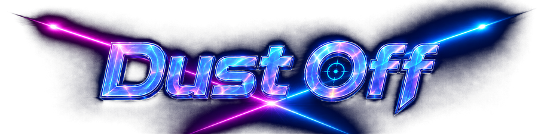
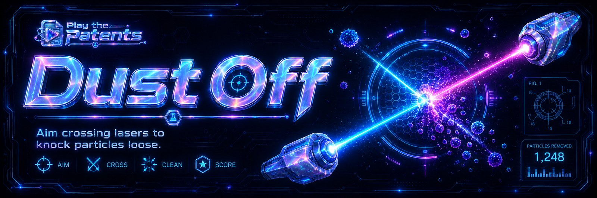
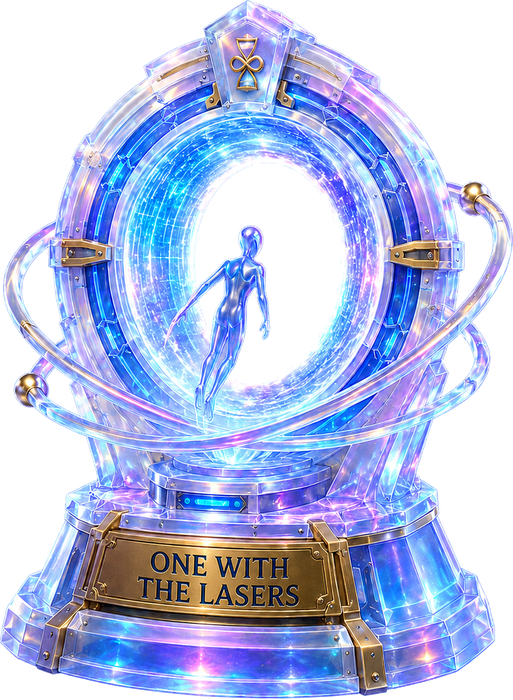

US 9,134,205 B2 · Removing surface particles from an object
Radiofrequency particle separator, except up the frequency five million fold because LASERS.
Or press R
Shift ended
Three rounds missed. The line stops.

Hillis team
Round ten, cleared. One with the lasers.